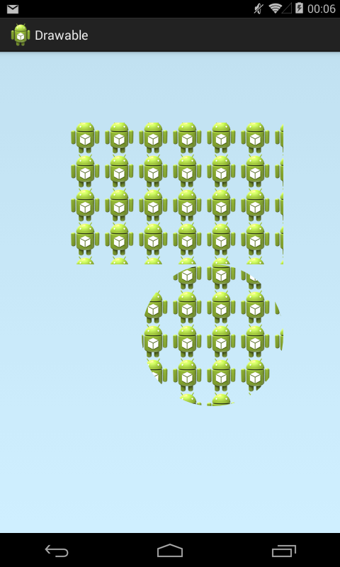
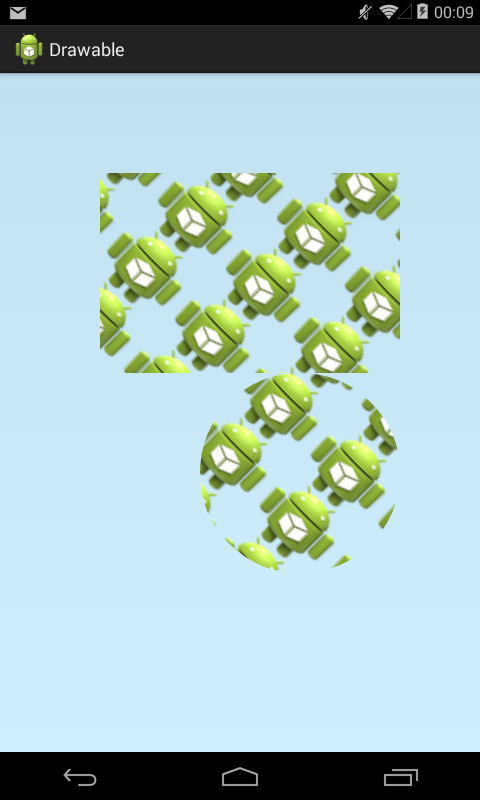
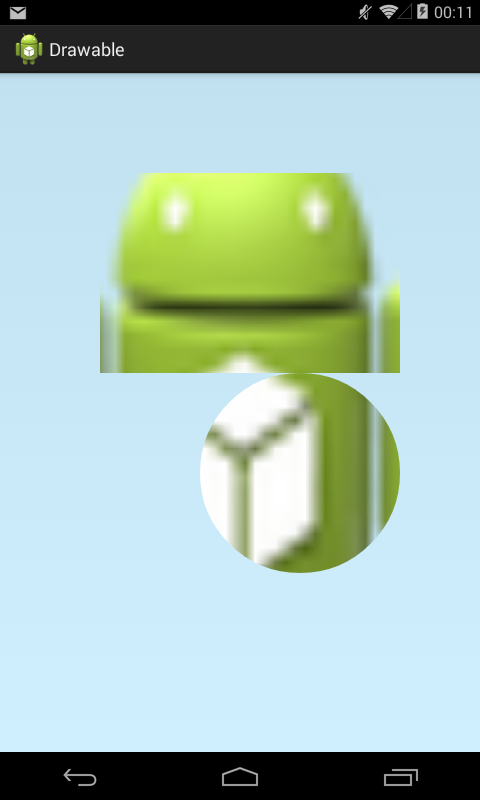
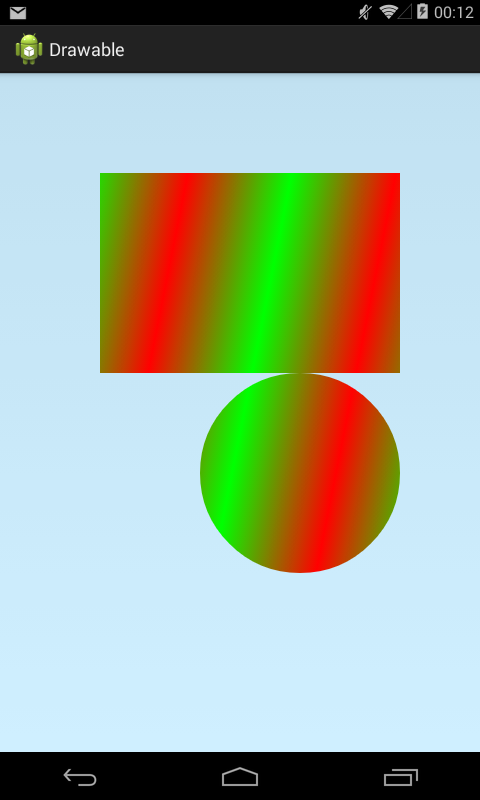
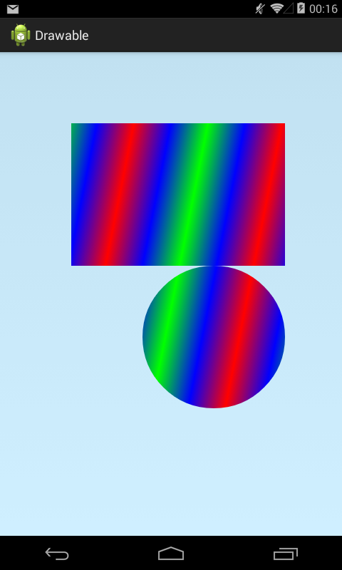
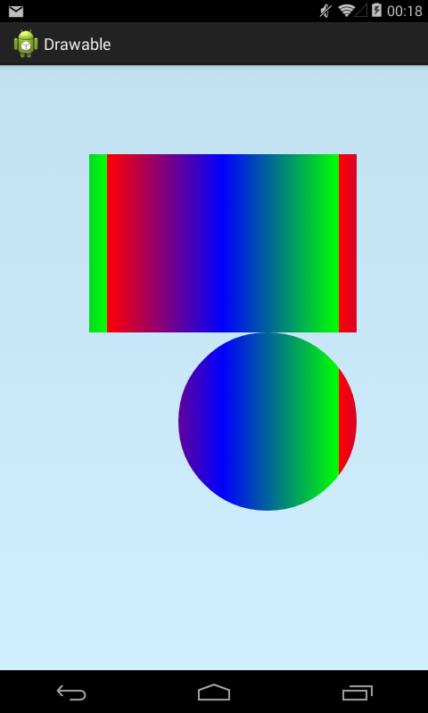
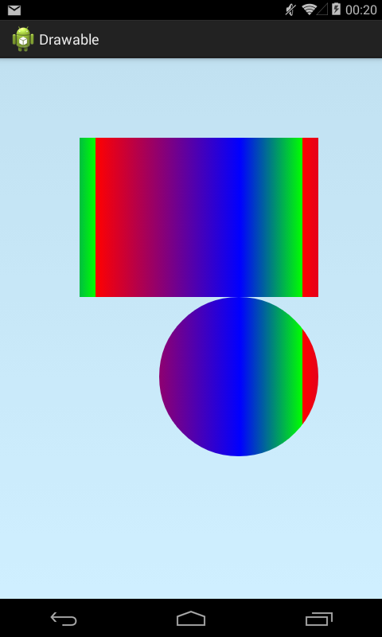

В этом уроке:
- изучаем подклассы Shader
Используя подклассы класса Shader мы получаем возможность "рисовать рисунком". Для этого необходимо передать объект Shader в метод кисти setShader и кисть будет использовать рисунок шейдера для рисования объектов. Рассмотрим существующих наследников класса Shader.
Примеры я буду делать в Activity. Вся графика будет реализована в классе DrawView.
public class MainActivity extends Activity {
@Override
protected void onCreate(Bundle savedInstanceState) {
super.onCreate(savedInstanceState);
setContentView(new DrawView(this));
}
class DrawView extends View {
public DrawView(Context context) {
super(context);
}
@Override
protected void onDraw(Canvas canvas) {
canvas.drawARGB(80, 102, 204, 255);
}
}
}Для создания этого шейдера необходимо передать ему Bitmap и указать вертикальный и горизонтальный TileMode. Подробно про режимы TileMode можно посмотреть в Уроке 163.
Перепишем класс DrawView:
class DrawView extends View {
Paint paint;
Bitmap bitmap;
Bitmap scaledBitmap;
public DrawView(Context context) {
super(context);
Shader shader = createShader();
paint = new Paint(Paint.ANTI_ALIAS_FLAG);
paint.setShader(shader);
}
@Override
protected void onDraw(Canvas canvas) {
canvas.drawARGB(80, 102, 204, 255);
canvas.drawRect(100, 100, 400, 300, paint);
canvas.drawCircle(300, 400, 100, paint);
}
private Shader createShader() {
bitmap = BitmapFactory.decodeResource(getResources(),
R.drawable.ic_launcher);
BitmapShader shader = new BitmapShader(bitmap,
Shader.TileMode.REPEAT, Shader.TileMode.REPEAT);
return shader;
}
}Читаем ic_launcher в Bitmap, создаем шейдер и передаем этот шейдер в метод кисти setShader. И используя эту кисть рисуем квадрат и круг.

Мы использовали TileMode.REPEAT, поэтому изображение повторяется по всему доступному пространству.
К шейдеру можно применить преобразования, используя матрицу (о матрицах был Урок 144).
Перепишем метод createShader:
private Shader createShader() {
bitmap = BitmapFactory.decodeResource(getResources(),
R.drawable.ic_launcher);
BitmapShader shader = new BitmapShader(bitmap,
Shader.TileMode.REPEAT, Shader.TileMode.REPEAT);
Matrix matrix = new Matrix();
matrix.postScale(2, 1.5f);
matrix.postRotate(45);
shader.setLocalMatrix(matrix);
return shader;
}В матрице настраиваем растяжение и поворот и передаем ее в шейдер методом setLocalMatrix. Смотрим результат

Можно растянуть Bitmap на всю канву
private Shader createShader() {
bitmap = BitmapFactory.decodeResource(getResources(),
R.drawable.ic_launcher);
bitmap = Bitmap.createScaledBitmap(bitmap, 480, 680, true);
BitmapShader shader = new BitmapShader(bitmap,
Shader.TileMode.REPEAT, Shader.TileMode.REPEAT);
return shader;
}Методом createScaledBitmap создаем копию bitmap размером с канву.

Этот шейдер позволяет нам получить градиент. У его класса есть два конструктора. Оба просят от нас указать им TileMode и координаты линии, которая будет задавать одновременно направление, начало и размер градиента.
Разница заключается в способе указания цветов для градиента. Один конструктор просит от нас указать ему два цвета. По ним он и нарисует градиент.
private Shader createShader() {
LinearGradient shader = new LinearGradient(0, 0, 100, 20,
Color.RED, Color.GREEN, Shader.TileMode.MIRROR);
return shader;
}Указываем красный и зеленый цвета. Линию указываем (0,0)-(100,20). Градиент будет идти в направлении линии и будет размером с длину этой линии. В качестве TileMode передаем MIRROR.

Другой конструктор позволяет задать массив цветов и их положений в градиенте.
private Shader createShader() {
LinearGradient shader = new LinearGradient(0, 0, 100, 20,
new int[] { Color.RED, Color.BLUE, Color.GREEN }, null,
Shader.TileMode.MIRROR);
return shader;
}Передаем массив цветов, а вместо массива позиций передаем null – градиент сам равномерно распределит цвета..

Теперь попробуем задать позиции вручную.
private Shader createShader() {
LinearGradient shader = new LinearGradient(120, 0, 380, 0,
new int[] { Color.RED, Color.BLUE, Color.GREEN },
new float[] { 0f, 0.5f, 1f }, Shader.TileMode.REPEAT);
return shader;
}Обратите внимание, что я здесь использовал TileMode REPEAT. В таком режиме лучше будет видно распределение цветов по градиенту. Также, я немного изменил координаты линии, чтобы градиент стал побольше и чисто горизонтальным.
В массиве позиций передаем три позиции (соответственно количеству цветов). Чтобы понять, что означают эти позиции, давайте примем за единицу размер градиента (в нашем случае это ширина). А позиции будут обозначать в каком месте градиента будет максимальное насыщение соответствующим цветом.
В нашем примере три цвета: красный синий, зеленый. И три позиции: 0, 0.5, 1. Т.е. красный будет располагаться в начале градиента (0), синий – в середине (0.5), а зеленый – в конце (1). Пространство между цветами будет заполнено соответствующим градиентом.

Немного изменим позиции и сместим синий правее, тем самым увеличивая зону красно-синего градиента и уменьшая зону сине-зеленого.
private Shader createShader() {
LinearGradient shader = new LinearGradient(120, 0, 380, 0,
new int[] { Color.RED, Color.BLUE, Color.GREEN },
new float[] { 0f, 0.7f, 1f }, Shader.TileMode.REPEAT);
return shader;
}Для синего позиция стала равной 0.7 и он ушел правее.

Для класса RadialGradient указываем центр и радиус и градиент пойдет от центра к краям. А SweepGradient – градиент, который идет по кругу вокруг центра. У этих двух классов, аналогично LinearGradient, есть простой конструктор, где можно указать два цвета, а есть посложнее - с возможностью указания массива цветов и их соотношений.
Примеры использования xml-вариантов RadialGradient и SweepGradient можно посмотреть в уроке 162.